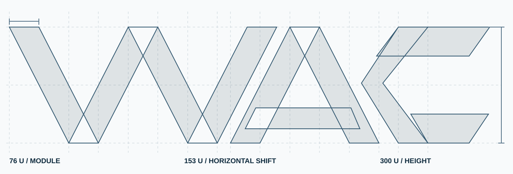

WAC / MARKA SİSTEMİ
WAC / MARKA SİSTEMİBir işaret.
Kalıcı bir kimlik.
WAC markasının dijital, basılı ve mekânsal kullanımını aynı matematiksel ve tipografik yapı etrafında birleştiren taşınabilir tasarım kılavuzu.
WAC, katlanmış geometrinin ortak işaretidir.
Ana logotip, W, A ve C harflerini eş şerit genişliğiyle ve aynı diyagonal eğimle kuran katlanmış yüzeylerden oluşur. Kat izleri, tek bir kâğıdın ışık ve gölge düzlemleri gibi okunur. Küçük kullanımda bütün harfler orantılı küçültülür.


Ölçülebilir katlanma sistemi.
Üç harfin diyagonal taşıyıcılarında 76 birim şerit genişliği ve 300 birim yükseklikte 153 birim yatay kaymalı paralel diyagonaller kullanılır. Katman gölgeleri ölçüleri değiştirmez; süs değil, katlama yönünü belirtir.

Kat izleri logo küçültüldüğünde ana harflerin okunurluğunu bozacak ölçüde artırılmamalıdır.
20 ve 27. Alt alta.
Yıl ifadesi “20/27” olarak yazılmaz. Kongre yılı kullanımında 20 ve 27, ince bir ayraç çizgisinin yanında dikey dizilir. Metin içindeyse her zaman “2027” yazılır.
 WAC2027
WAC2027Kalıcı marka WAC; dönemsel kimlik WAC 2027. Sonraki yıllarda geometrik işaret değişmeden yalnızca kongre dönemi verisi güncellenebilir.
Renk bir sistem, efekt değil.
Arduvaz#0E2A3D
Grafit#58758A
Mineral mavi#29495D
Gümüş gri#CCD5DD
Kâğıt#F4F6F7
Kırık beyaz#FFFFFF
Arduvaz ve grafit, kalıcı kurumsal kimliğin temelini oluşturur. Mineral mavi yalnızca çizgilerde ve yönlendirmelerde sınırlı kullanılır; kırık beyaz zemin okunurluğu ve sakinliği korur. Logo, aynı rengin kâğıt yüzeylerini ayırt eden tonlarıyla uygulanır.
Net. Güçlü. Ölçülü.
Uygulamada yerel sistem sans-serif ailesi kullanılmaktadır; üçüncü taraf font sunucusuna bağımlılık yoktur. Başlık kalınlığı 700 civarında, gövde ağırlığı 400–500, teknik etiketler 650–700 aralığındadır.
ve Uzay
Türkçe harf desteği, uzun başlıklarda satır kırılımı, okunur metin genişliği ve klavye erişilebilirliği bütün uygulamaların zorunlu parçasıdır.
Tek geometriden değişen alanlar.
Küçük işaret
Site ikonu, ekran köşesi ve tek renk kurumsal kullanım.
Yatay kilit
Web üst bölümü, davetiye, doküman başlığı ve resmi yazışma.
Koyu kullanım
Sahne ekranı, dijital açılış ve koyu zeminli işaretlemeler.
Kimlik değişmeden büyür.
- WAC harflerinin katmanları ayrılmaz, açıları değiştirilmez ve tekil şeritler yeniden oranlanmaz.
- Logoda yıl “20” ve “27” olarak dikey dizilir; metinlerde normal “2027” kullanılır.
- TBTK adı gerektiğinde metinle belirtilir. TBTK amblemi WAC marka kilidinin parçası değildir.
- Fotoğraf, film ve sanat görselleri kimliğe eklenebilir; ancak logonun okunurluğunu bozmamalıdır.
- WAC 2027 ile kalıcı WAC markasının kurumsal konumları karıştırılmamalıdır.
- İlgili sempozyumların resmî adları görsel tasarım uğruna değiştirilmez.
- Görsel dil WAC'ın Akademik Program, Forum, Fuar, Delegasyon ve Kültürel Program bileşenlerini farklılaştırmalı, fakat parçalamamalıdır.
Taşınabilir özgün dosyalar.
Bu klasör kurumsal kimliği bağımsız olarak içerir. İleride başka alan adına taşınırken ornek/kimlik/ klasörü bütün olarak kopyalanabilir.